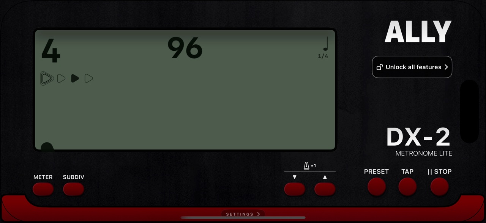
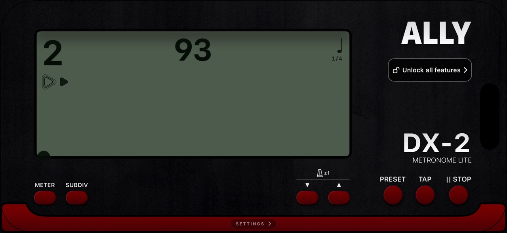

The essential pulse
Set 30–252 BPM, or tap a tempo. Play and stop with dedicated controls.
Music App Store
AllyMetronomeLite
The essential AllyMetronome experience, with tap tempo, subdivisions, and a clear, steady pulse.
iPhone


Set 30–252 BPM, or tap a tempo. Play and stop with dedicated controls.
Use meters 0–4 with a fixed /4 beat value, plus 4/4, 3/4, and 2/4 presets.
Choose Standard, Loud, or Woodblock sounds and adjust control visibility.
ALSO IN THE FAMILY
Find your steady.